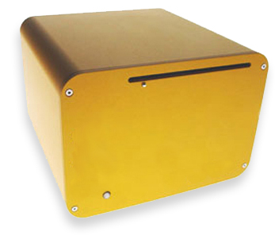

Motivation
WiFi.ArtCache is inspired by a paradox of the Internet: it makes it possible for us to stay in touch with our family, colleagues, business partners, friends, and so forth - with the paradox that we may remain physically distanced. The Internet has divested proximity of its sense of closeness and touch. Semantically, proximity has been loosened of its sense of physical distance and material substance. By using proximity and the dance of bodies in a shared physical space as an interface modality, WiFi.ArtCache is designed to foreground this paradox, and the tension between being in touch, while being at a distance.
The Internet has always been about diminishing the constraints of physical geography and the perceived burden of distance, space and matter. This project deliberately inverts this logic. WiFi.ArtCache is meant to remind us of a kind of materiality of virtual worlds, and help visualize through artist-made narratives the ways in which we actually share our bulky, physical space with our airy, ethereal data.
|

|
The abutment WiFi.ArtCache illuminates - where data swaddling social beings is made evident - is consequential and significant. The junction has a material and metaphorical quality that is refashioning public and private space particularly as our data finds its way into more of our worlds nooks and crannies.
WiFi.ArtCache makes apparent the boundaries of networks, but does so not to suggest that the virtual and physical are different. This project is not one that relies upon binary distinctions between an existence either on and off the network . Rather, it is intended to suggest that we live in a world of hybrids where it isnt even possible to consider self as distinct from networks or data. But note that this is not the cyberfantasy of the self fully jacked into networks, leaving the flesh behind. That fantasy is pass; it is so 20th century. The purpose of seeing the world from the perspective of a shared existence with our data is to force us to change the way we think about the places we live, and to consider how we can share those places with our ulterior data in a livable, habitable, aesthetically rich way.
more
|
|